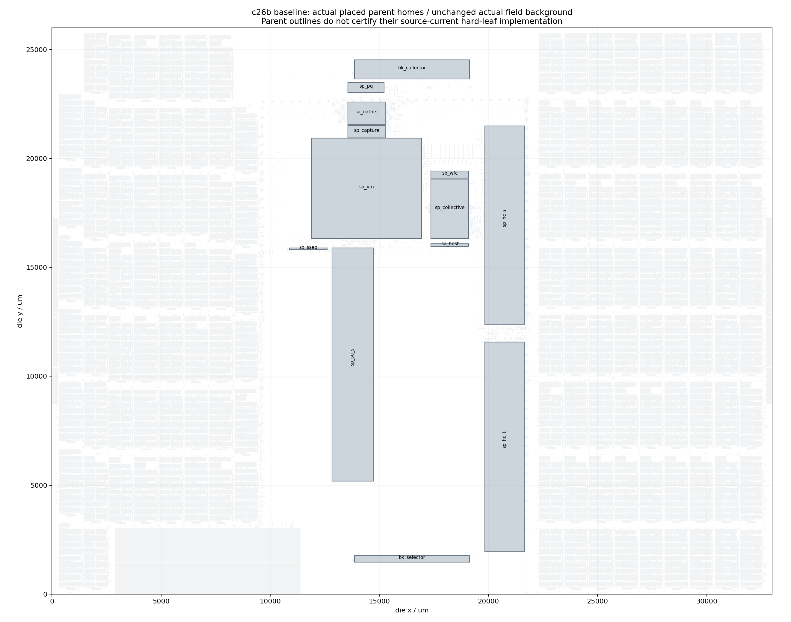
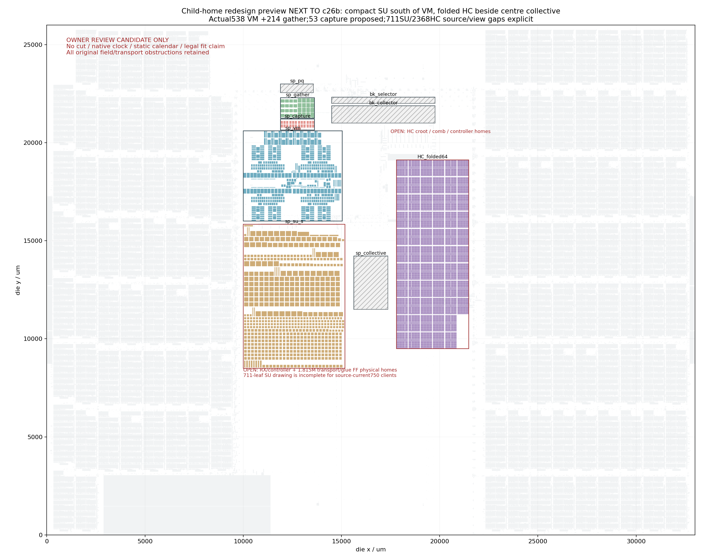

Actual c26b baseline

Child-home proposal

Candidate only. Owner review is required before adoption. Die fit, shared-channel cut, actual clock delivery and static calendar remain open.


The proposal draws 538 current VM leaves, 214 actual gather children, 53 source-exact capture children with proposed pins, 711 historical SU leaves, and 2,368 HC leaves in 64 folded groups. SU current source has 750 native clients and 5,258 owners / 5,302 clock entries; its 1,814,932 transport and glue FF bits have no qualified physical homes. HC residual roots, comb and controller remain open. Hatched parent rectangles are unresolved source-current implementations.
Every original field and transport obstruction stays in the audit. Repacking these objects requires a fresh source and physical trial. Dashed Explorer flights are straight endpoint graph segments, not detailed routed wires; their crossing a rectangle alone does not establish physical congestion.
Source hashes, exact child homes, retained obstructions and overlap counts